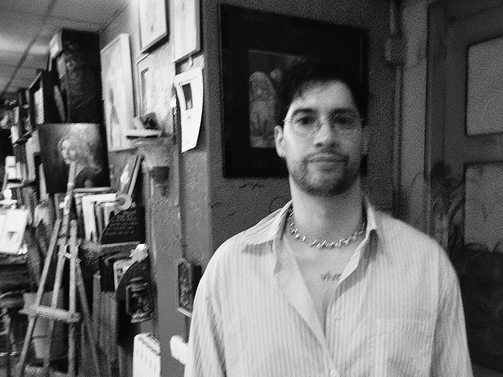
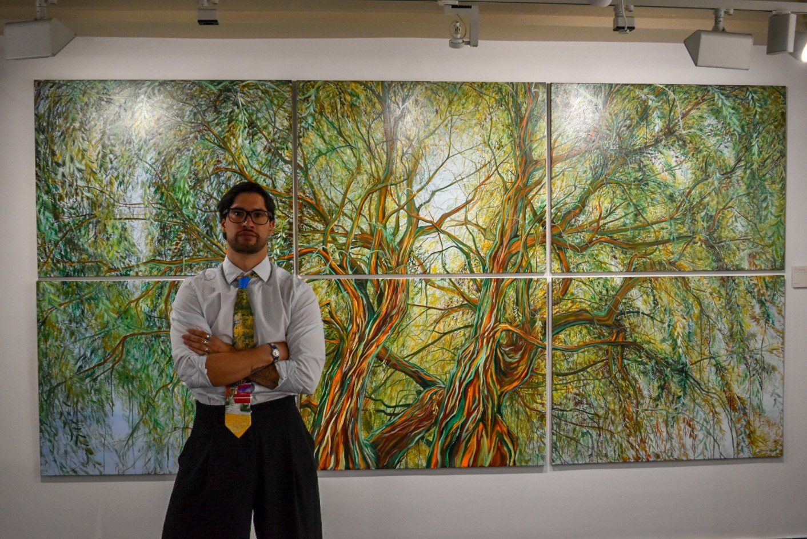
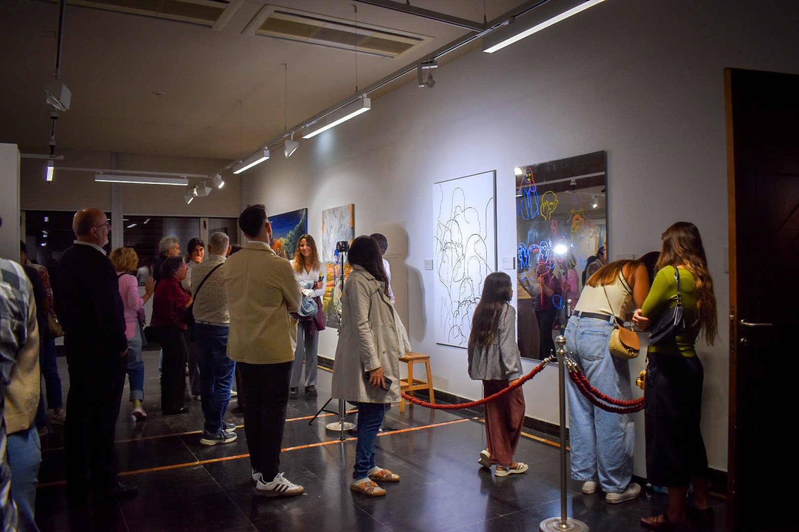

Prensa
Exposición
Reflejos y sombras, primera exposición individual de Javier Sanagustín Moreu.
Palacio de Villahermosa, Fundación Ibercaja, Huesca.
8 de octubre – 11 de noviembre de 2026.
Catorce obras que nacen de un acercamiento a la historia de la pintura desde la necesidad de reconocerse en lo que otros ya habían pintado.
Lo que salió reconocible es un reflejo. Lo que salió transformado, desplazado, es una sombra.
Web de la exposición ↗
Catálogo, 20 € ↗
En prensa
- 11 oct 2026
- «Javier Sanagustín expone ‘Reflejos y sombras’ en el Palacio de Villahermosa». Diario del Alto Aragón.
- 9 oct 2026
- «Javier Sanagustín con ‘Reflejos y sombras’: ‘Por fin me atrevo a hacer una exposición individual con lo que yo quería pintar’». Cadena SER Aragón, Radio Huesca.
- 8 oct 2026
- Myriam Martínez Iriarte, «“Reflejos y sombras”, el viaje de Javier Sanagustín para reconocerse en la pintura». El Diario de Huesca. Imágenes de la exposición ↗
- 21 jun 2026
- Myriam Martínez Iriarte, «Javier Sanagustín: Más de cien maneras de manchar y una sola forma de enseñar». El Diario de Huesca.
Biografía breve
Javier Sanagustín Moreu (Huesca, 1995) es pintor y director de la Escuela de Dibujo y Pintura Sanagustín. Su formación es ajena a la academia: se forma en el aula, dando clase y mirando trabajar a sus alumnos. Su obra evoluciona del realismo hacia un lenguaje gestual, donde la mancha y el agua sostienen la emoción de cada cuadro.
Preguntario
¿De dónde nace esta exposición?
Nace de una visita al Prado. Escuché a un niño decirle a su padre, vamos a ver a Goya. Lo dijo como quien va a ver a alguien cercano, alguien que sigue estando ahí.
¿Qué esperas que se lleve el visitante?
Que se detenga un momento delante de cada obra. No pinto para que entiendan mis ideas. Pinto para que cada uno encuentre las suyas.
Debutas en el Palacio de Villahermosa. ¿Qué supone eso?
Me siento un privilegiado. Siempre quise que mi primera exposición fuera aquí, en Huesca, porque los paisajes son de aquí, mi entorno es este, mi gente está aquí.
Material
Dossier de artista. Biografía, trayectoria, obra y preguntario. PDF, 10 páginas ↗
Imágenes de cada obra en alta resolución: botón al pie de cada obra en la web de la exposición ↗.
Contacto de prensa
Javier Sanagustín Moreu
javiersanagustinmoreu@gmail.com
696 379 281
@javiersanagustinm.art ↗


